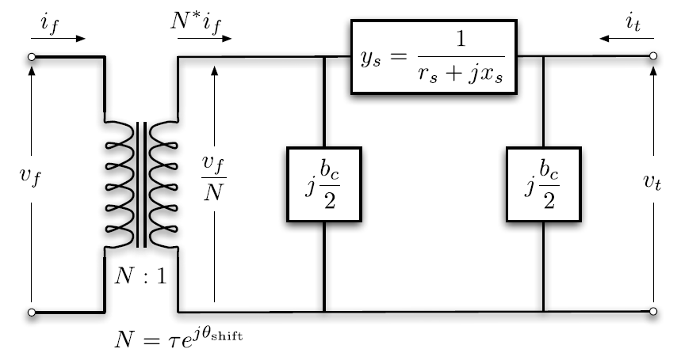
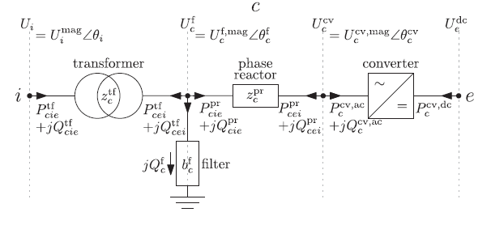

Power-flow initialization
Frequency-domain converter and machine models are linearized around a steady-state operating point. PowerImpedance obtains that operating point from the combined AC/DC power-flow model and then applies the solved setpoints to the detailed active-device models.
The package maps the constructed network to PowerModels and PowerModelsACDC data structures. Those formulations build on the MATPOWER and MatACDC network models [7–9].
Branch equivalents
Balanced AC branches use the standard $\pi$ equivalent. With series admittance $y_s$, shunt conductance $g_c$, shunt susceptance $b_c$, tap ratio $\tau$, and phase shift $\theta_{\mathrm{shift}}$, the branch admittance is
\[\mathbf{Y}_{ac} = \begin{bmatrix} \left(y_s+\frac{g_c}{2}+\mathrm{j}\frac{b_c}{2}\right)\tau^{-2} & -\dfrac{y_s}{\tau\exp(-\mathrm{j}\theta_{\mathrm{shift}})} \\ -\dfrac{y_s}{\tau\exp(-\mathrm{j}\theta_{\mathrm{shift}})} & y_s+\dfrac{g_c}{2}+\mathrm{j}\dfrac{b_c}{2} \end{bmatrix}.\]

Detailed impedance, transformer, overhead-line, and cable objects are reduced to the equivalent branch quantities required at the fundamental frequency. Their full frequency-dependent models remain available to the later impedance and small-signal calculations.
Converter equivalents
A power-flow converter contains its AC and DC terminals, series reactor, loss model, and control mode. Depending on its setpoints, it regulates DC voltage or active power together with its selected AC-side quantity.

Once power flow is solved, the operating point is used for the nonlinear equilibrium and active-device linearization. Power-flow warnings therefore refer to the sampled physical converter and its constraints, not to an aggregated uncertain model.
Calculated operating point
compute(PowerFlowProblem(network), ACDCPowerFlow()) returns a typed PowerFlowResult. Its result, data, nodes2bus, and elem2comp fields retain the PowerModelsACDC calculation and conversion mappings. The operating_point field contains the per-element Setpoint values required by active-component linearization. active_setpoint_values provides the corresponding dictionary.
compute(LinearizationProblem(network, powerflow), AdmittanceLinearization()) consumes that exact result and returns a LinearizationResult. Its network_model field contains the calculated frequency-domain NetworkModel. Its operating_point field records the point used to build the active admittances. The package root and NetworkBuilder re-export the same problem and formulation types.
Linear networks skip the power-flow solve and use an empty OperatingPoint. solve(network_state) constructs its Classic Network result from the same PowerFlowResult. It does not perform a second power flow.
Reuse in parametric studies
Every materialized network configuration performs its own required power flow before linearization. Passive parameters can change the power-flow solution and the active-device setpoints, so their classification does not authorize reuse.
An explicit preprocess call may pair completed parametric PowerFlowResult values with their originating network configurations. This path reuses only those exact results. There is no implicit operating-point cache or nominal-network substitution.
Each Monte Carlo trial samples a complete numeric network before calling JuMP or PowerModelsACDC. The aggregate reconstructs supported bus-level Measurement values from the completed numeric solves.